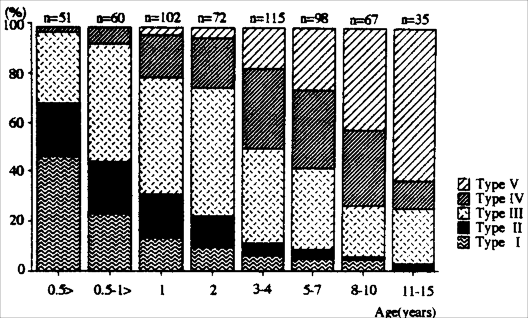

THE CIRCUMCISION REFERENCE LIBRARY
ABSTRACT
Purpose: We evaluated preputial development in Japanese boys.
Materials & Methods: Preputial retractability and formation of a tight ring were evaluated in 603 Japanese boys 0 to 15 years old.
The incidence of a completely retractable prepuce gradually increased from 0% at age 6 months to 62.9% by 11 to 15 years, while that of a tight ring decreased with age from 84.3% to 8.6%. Nine boys had balanoposthitis but none had a symptomatic urinary tract infection. [clarification]
Conclusions: Incomplete separation of the prepuce is common and normal in neonates and infants, and preputial separation progresses until adolescence. Awareness of these findings will eliminate unnecessary circumcision in boys.
Key Words: penis, phimosis, growth and development
While neonatal circumcision has not been common in Japan, an increasing number of parents insist on circumcision of the prepuce in infancy due to unretractability. The American Academy of Pediatrics has concluded that "newborn circumcision has potential medical benefits as well as disadvantages and risks."1 Reasons for performing circumcision include the prevention of balanoposthitis, phimosis with preputial ballooning, urinary tract infection, sexually transmitted diseases, and cervical and penile cancer. Reasons for not performing circumcision include pain, requirement of local anesthesia, contraindications and complications. While more than 60% of neonates are circumcised in the United States, controversy continues on whether neonatal circumcision should be performed.2,3
The majority of neonates have physiological phimosis or an inability to retract the prepuce. During the first 3 or 4 years of life growth of the penile body, accumulation of epithelial debris, and intermittent penile erections eventually separate the prepuce from the glans, permitting retraction.4 Gairdner reported that about 90% of prepuces become retractable by age 3 years in European boys,5 which suggests that knowledge of the natural history of the prepuce will eliminate unnecessary surgical trauma of the male genitalia. We evaluated preputial retractability in 603 Japanese boys due to the lack of information on development of the prepuce in this population.
We evaluated 603 Japanese boys 0 to 15 years old (average 3.8) who presented at our outpatient clinic from September 1994 to September 1995. With the subject relaxed and supine the prepuce was gently retracted without traumatic force and the degree of preputial retractability as well as presence or absence of a tight ring was determined. Preputial status was classified into 5 types based on preputial retractability: type I - no retraction of prepuce at all, type II - external urethral meatus exposure only, type III (intermediate) - glans exposure halfway to the sulcus of the corona, type IV - glans exposure to above the corona at the site of the preputial adhesion and type V -easy exposure of the whole glans (fig. 1). A tight ring was defined as a stenotic ring that prevented the prepuce from being retracted, or constricted the glans or penile shaft during retraction of the prepuce.
Fig. 1 Classification of prepuce type showing presence or absence of tight ring. Type I, no retraction of prepuce at all. Type II, external urethral meatus only. Type III, glans exposure halfway to sulcus of corona. Type IV, glans exposure halfway to sulcus of corona. Type IV. glans exposure to above corona at site of preputial adhesion. Type V, easy exposure of the whole glans.
Of the 603 boys 3 were excluded from study due to previous surgery for phimosis. The degree of preputial separation increased with age (fig. 2). Before age 6 months the incidence of types I (completely unretractable) to V (completely retract- able) prepuce was 47.1, 21.5, 29.4, 2 and 0% respectively. None of the 111 boys younger than 1 year had a type V prepuce. In the 3 to 4-year-old boys types I and V prepuce were noted in 6.2 and 16.5% respectively. The incidence of types I and II prepuce decreased from 68.6% at ages 0 to 6 months to less than 10% at age 5 years. Of the 11 to 15-year-old subjects the prepuce was type V in 62.9%, type IV in 11.4% and type I in none.
A tight ring was frequently noted in infancy but the incidence also decreased with age (84.3% at ages 0 to 6 months, episodes of paraphimosis occurred and no boy had a urinary tract infection. So called pinhole prepuce, the most severe form of unretractable prepuce, was noted in only 4 children younger than 2 years. Balanoposthitis was present in 9 of the 565 boys (1.5%) 1.9 to 10 years old, including 2 older than 8 years with Type IV and 7 younger than 5 years with types I to III prepuces.
 Figure 2. Distribution of types of prepuce. Degree of preputial separation increases with age. Before age 6 months incidence of types I and II was 47.1 and 21.5% respectively. Thereafter type III prepuce was most common until preschool age. Of the 11 to 15-year-old subjects 62.5% had type V prepuce.
The prepuce appears as a ring of thickened epidermis at 8 weeks of gestation and grows toward the tip of the glans until 16 weeks of gestation. Separation of the prepuce from the glans begins by 24 weeks of gestation. The stage of preputial separation reached at birth varies greatly among individuals.5,6
Fig. 3. Incidence of tight ring in prepuce
was 84.3% at ages 0
to 6 months but it decreased with age to 8.6% at 11 to 15
years.
Others have stated that preputial separation should be sufficient by 10 days of life to allow mechanical retraction without tearing the epithelium.7 Nevertheless, in all of the Japanese male infants younger than 1 year in our study there was the same degree of difficulty in retracting the prepuce (types I to IV). The incidence of highly unretractable prepuce (types I to II). was approximately 70% by age 6 months and 50% by 12 months. These findings support those of Gairdner, who studied 500 English boys 0 to 13 years old.5 Our study revealed a decreased frequency of unretractable prepuce and tight ring formation in the older age group. However, it is not easy to make a clear distinction between a tight ring that resolves spontaneously and a pathological tight ring that will eventually need surgical treatment. The incidence of completely retractable prepuce (type V) increased from 0% at age 6 months to 62.9% at age 11 to 15 years, while that of a tight ring decreased from 84.3 to 8.6%. Øster examined preputial development in Danish boys 6 to 17 years old, including 173 monitored annually for 7 years, and reported that the incidence of preputial adhesion decreased from 70% at ages 6 to 7 years to 5% at 16 to 17 years.8 These findings indicate that incomplete preputial separation is common and normal in neonates and infants, and preputial separation progresses until school age.
Incomplete preputial separation has been considered responsible for colonization of the prepuce by pathogens, which lead to balanoposthitis or urinary tract infection. In fact, all 9 boys with balanoposthitis in our series had an incompletely retractable prepuce. However, the incidence of this condition was only 1.5% and 7 boys were from 1 to 5 years old. Nogueras et al reported that 38 boys of 55 boys (69%) with balanitis were 1 to 4 years old and 6 were younger than 1 year.9 This observation suggests that poor genital hygiene in preschool boys is more responsible for balanoposthitis than unretractablity of the prepuce. Wiswell and Roscelli showed that the incidence of urinary tract infection is lower in circumcised than uncircumcised infants.10 A reduced incidence of urinary tract infection may be at least one medical benefit but it is not a decisive reason for justifying indiscriminate circumcision. While circumcision should be performed in select cases, it is difficult to determine the neonate who ultimately will need circumcision. More detailed longitudinal study is needed to make a clear distinction between pathological and physiological phimosis.
The incidence of penile cancer, which develops primarily in uncircumcised men, is reported to be exceedingly low in Scandanavian countries, where few men are circumcised but genital hygiene is excellent.4 Before considering circumcision or application of estrogen cream11. physicians and parents should encourage boys to wash their hands frequently and to learn basic hygiene. We agree with Wallerstein that in the absence of emergency medical problems the prepuce of infants should remain uncircumcised.12
In most male individuals preputial separation continues until adolescence, presumably to protect the premature glans penis. Physicians as well as parents should be familiar with the biological role and natural development of the prepuce. While surgery must be considered in the presence of paraphimosis or dysuria associated with phimosis, few boys require circumcision until adolescence when the only reason for this procedure is poor preputial retractability.
http://www.cirp.org/library/normal/kayaba/